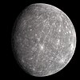

mercury

Definition: Mercury is the first planet from the Sun and the only one in the Solar System without a considerable atmosphere. It is the smallest terrestrial planet of the Solar System and despite being also smaller than the Solar System objects Ganymede and Titan it is massive enough to have about the same surface gravity as the even larger planet Mars. Like Venus, Mercury orbits the Sun within Earth's orbit, making it appear in Earth's sky only in inferior positions, never appearing further from the Sun than 28°, resulting in it appearing only as a "morning star" or "evening star", like Venus, though not as brightly. Mercury and Earth return to the same position to each other in synodic cycles of 116 days. It is named after the Roman god Mercuriuscode: lat promoted to code: la (Mercury), god of commerce, messenger of the gods, and mediator between gods and mortals, corresponding to the Greek god Hermes (Ἑρμῆςcode: ell promoted to code: el ).
Source: Wikipedia
Wikipedia Page (Something wrong with this association? Let us know.)
Wikidata Page (Something wrong with this association? Let us know.)
Occurs in: